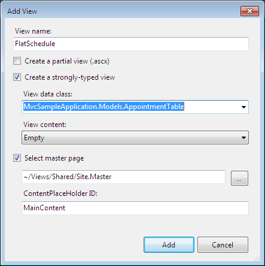
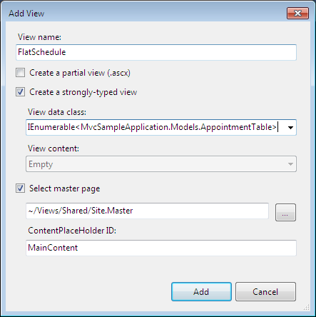
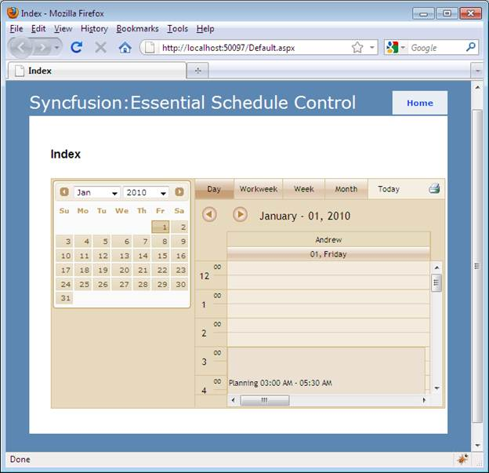

To create the Schedule control using View customization:
1. Right-click the View->Home folder.
2. Click Add, and then select View.
3. Name the View FlatSchedule.
4. Check the box that says Create a strongly-typed view, and on the drop down menu select your model. In this case, it is “MvcSampleApplication.AppointmentTable”.

Figure 47: Strogly-typed View
 Note: The View Data class drop-down list will be
empty until you successfully build your application. It is a good idea to select
the menu option build, build solution before opening the Add New
dialog.
Note: The View Data class drop-down list will be
empty until you successfully build your application. It is a good idea to select
the menu option build, build solution before opening the Add New
dialog.
5. In a View Data Class, make the model as IEnumerable collections as given below:

Figure 48: View Data classes as IEumerable collection
6. Add the following code in the FlatSchedule.aspx file, to create the Schedule control in View:
|
[View] <%=Html.Syncfusion().Schedule()("FlatSchedule") .DataSource((IEnumerable)Model) .BindList(columns => { columns.IdField("AppId"); columns.SubjectField("Subject"); columns.LocationField("Location"); columns.StartTimeField("StartTime"); columns.EndTimeField("EndTime"); columns.DescriptionField("Descrip"); columns.OwnerField("Resource"); }) .Skins(ScheduleSkins.Sandune) %>
|
7. Opens the ~/Controllers/HomeController.cs.
8. Include the following namespaces in to HomeController:
Syncfusion.Mvc.Schedule
Syncfusion.Mvc.Shared
Include the Syncfusion.Mvc.Shared, Syncfusion.Mvc.Schedule namespaces to HomeController by using the following code:
|
[Controller] using Syncfusion.Mvc.Schedule; using Syncfusion.Mvc.Shared; |
9. Add two methods (one for loading View and one for handling the Schedule post actions).
|
[Controller]
/// <summary> /// This method is used to bind the Schedule /// </summary> /// <returns>View page, it displays the Schedule</returns> public ActionResult FlatSchedule() { var data = new NorthwindDataClassesDataContext().AppointmentTables.Take(200); return View(data); }
/// <summary> /// Post Requests are mapped to this method. This method invokes the HtmlActionResult /// from the Schedule. Required response is generated. /// </summary> /// <param name="args">Contains post action properties </param> /// <returns> /// HtmlActionResult which returns data displayed on the Schedule /// </returns> [AcceptVerbs(HttpVerbs.Post)] public ActionResult FlatSchedule(Params args) { IEnumerable data = new NorthwindDataClassesDataContext().AppointmentTables.Take(200); return data.ScheduleActions<ScheduleHtmlActionResult>(); }
|
10. Run the application.
11. Call this action in browser window Home/FlatSchedule (i.e. http://localhost:55031/Home/FlatSchedule)
The following screenshot illustrates the sample output:

Figure 49: Schedule Control added to the Application